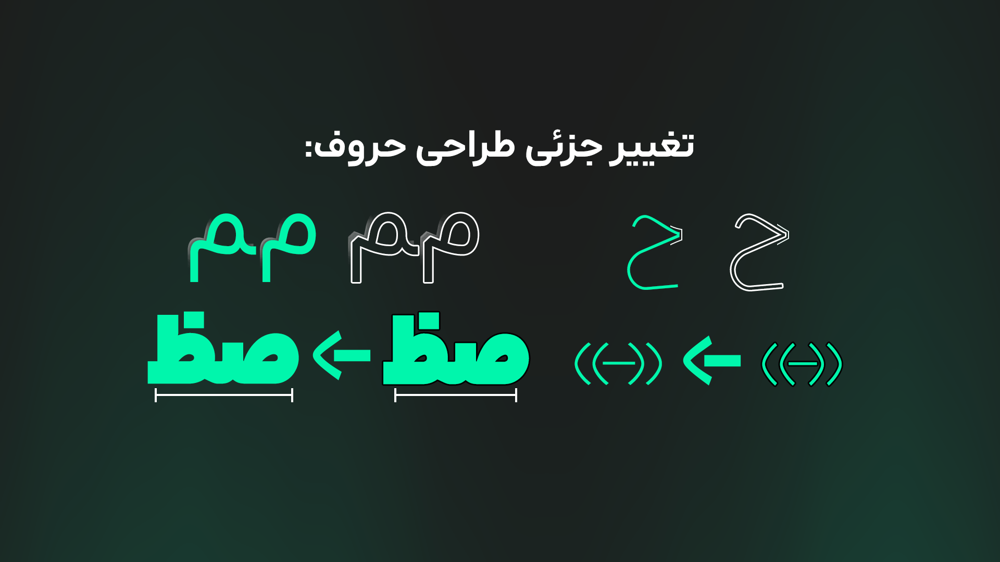
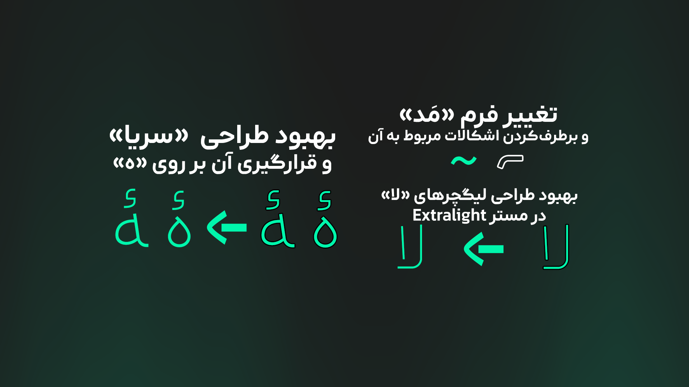

بروزرسانی ۲.۲.۰ آراد منتشر شد!
۲۰ آذر ۱۴۰۴ • نوشته شده توسط محمد درویشی
تو این نسخه تغییرات فرم بعضی حروف و علائم رو داشتیم که میتونید نمونههاش رو تو تصاویر ببینید. بعضی تغییرات رو هم داشتیم که بخاطر گزارش کاربران، برطرف شدن.
بهبود های طراحی:


- تغییر جزئی میم تنها و آخر
- تغییر جزئی حروف «ح»
- تغییر علامت مَد
- بهبود جزئی طراحی گیومه های فارسی
- در نسخۀ قبلی، نقطه بازبینی شده بود و علائمی که دارای نقطه بودند تغییر داشتند. در این نسخه تغییرات کامل شدند و در مورد حروف انگلیسی هم اِعمال شدند.
- بازسازی علامت تعجب و علامت سوال برعکس
- بهبود جزئی علامت تقسیم
بهبود های مخصوص مستر Thin:
- بهبود جزئی لیگیچر های الفلام
بهبود های مخصوص مستر ExtraBlack:
- تغییر جزئی حروف صاد و طا
- بهبود فرم ترکیباتی مانند «یچ» (بهبود اتصال فرم آخر حروف «چ، ج، ح، خ، ع، غ»)
- بهبود کوچک فرم «ع» و «ـع»
بهبود های فنی:
- بهبود کرنینگ اعداد با اعداد و کرنینگ اعداد با علائم
- رفع اشکال قرارنگرفتن «مَد» بر روی حروف
- متصل کردن اجزای تشدید (این مورد موجب نمایش بهتر گلیف میشود)
- بهبود عملکرد فونت در ترکیباتی مانند «رے»، زمانی که برای تغییر شکل «ی» از استایلتیکست استفاده شده باشد.
و تغییرات دیگری، که در اینجا اشاره نشدند.
برای دانلود این نسخه، به این پیوند مراجعه کنید.